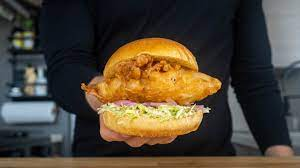

Beer-battered Fish Recipe

Description
This is a receipe that actually originates from Ethan Chlebowski's website. I first made this sandwhich a few months
ago and it was amazing. The batter was light and fluffy, yet it kept a nice crunchy feeling as I bit into the sandwhich.
The best part about this recipe is that it's extremely easy to make! I am absolute novice in the kitchen, and I was able
to make this sandwhich and be proud of the way it tasted. If I can do it, anyone can!
If you compare my ingredients to Chlebowski's page, they are similar with a few changes. This is because
where I live, some ingredients are more expensive/harder to come buy than others. You can whatever adjustments
you would like aside from the base batter ingredients. Everything aside from that is for adding flavor and you
can adjust it freely.
Ingredients
Beer Batter
- 100g of flour
- 50g of corn starch (I used potato starch and it was fine)
- 5g of baking powder
- 5g of salt
- Black pepper
- Chile flakes
- 10g of vinegar
- 200g of light beer (I actually tried this with carbonated water and it works just as well for any non-drinkers!)
Fish
- 1lb of white fish
- 5g of salt
- 50g of flour
- 1 liter of oil for frying (I used rice oil)
Special Sauce
- 50g of mayo
- 10g of chili crisp oil
- 10g of rice vinegar
Other
- Your desired bun
- Side dish
Steps
- First, mix the cornstarch, baking powder, salt, pepper, flour, and chile flakes in a bowl.
After mixing the dry ingredients, add the vinegar.
- Stir while adding in half of the beer. Keep stiring as you add in the rest. Take care to make sure
the batter doesn't become to liquidy.
- Preheat your oil in a pan and ready it for frying the fish.
- Mix the salt and four in a bowl.
- Gently coat the fish in the flour mixture, and then dip it into the batter.
- Once the oil is hot, fry the fish until they are golden brown.
- Mix the chili oil, vinegar, and mayo together to make the sauce.
- Serve with your favorite bun and side dish.
Home